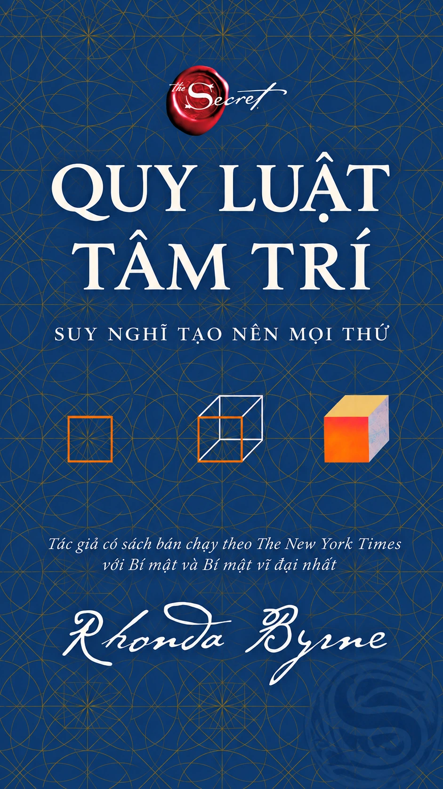

Rhonda Byrne
Quy
luật
tâm
trí
MỤC LỤC
18 phần · khoảng 120 phút đọc
Đã đọc xong
0/18
Chuỗi ngày đọc
0 ngày
Hôm nay
chưa đọc
Bắt đầu đọc
Mỗi ngày một quy luật. Tiến độ được lưu ngay trên máy của bạn.
Giới thiệu
Mở đầu · khoảng 6 phút
✓
Cách sử dụng cuốn sách này
Mở đầu · khoảng 3 phút
✓
1
Quy luật tâm trí 1: Suy nghĩ và nói về những gì bạn muốn
Quy luật 1 · khoảng 11 phút
✓
2
Quy luật tâm trí 2: Ngừng chú ý đến những gì bạn không muốn
Quy luật 2 · khoảng 8 phút
✓
3
Quy luật tâm trí 3: Hãy có nhiều suy nghĩ tích cực hơn suy nghĩ tiêu cực
Quy luật 3 · khoảng 7 phút
✓
4
Quy luật tâm trí 4: Bạn biến những gì mình tin thành hiện thực
Quy luật 4 · khoảng 9 phút
✓
5
Quy luật tâm trí 5: Suy nghĩ trước khi hành động
Quy luật 5 · khoảng 6 phút
✓
6
Quy luật tâm trí 6: Hình dung để biến thành hiện thực
Quy luật 6 · khoảng 6 phút
✓
7
Quy luật tâm trí 7: Luôn tập trung vào kết quả cuối cùng
Quy luật 7 · khoảng 8 phút
✓
8
Quy luật tâm trí 8: Hãy biết ơn
Quy luật 8 · khoảng 9 phút
✓
9
Quy luật tâm trí 9: Bạn thu hút về phía mình những gì bạn nghĩ về người khác
Quy luật 9 · khoảng 7 phút
✓
10
Quy luật tâm trí 10: Hãy suy nghĩ như thể bạn giàu có
Quy luật 10 · khoảng 9 phút
✓
11
Quy luật tâm trí 11: Dùng suy nghĩ để đạt được sức khỏe tốt
Quy luật 11 · khoảng 9 phút
✓
12
Quy luật tâm trí 12: Những suy nghĩ vui vẻ cho một cuộc sống hạnh phúc
Quy luật 12 · khoảng 8 phút
✓
Kết luận
Phần cuối · khoảng 4 phút
✓
Quy luật tâm trí
Phần cuối · khoảng 1 phút
✓
Lời cảm ơn
Phần cuối · khoảng 6 phút
✓
Về tác giả
Phần cuối · khoảng 3 phút
✓